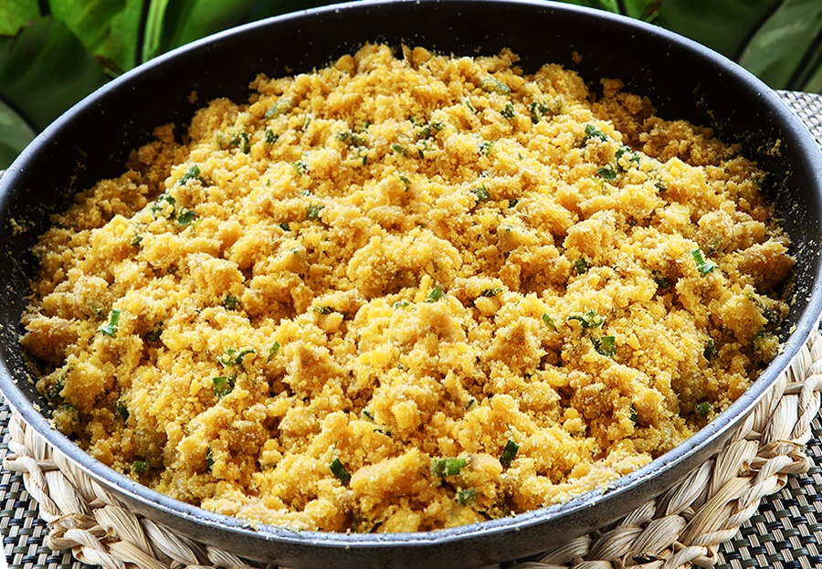

Farofa de Banana

"This recipe is Brazilian. Farofa is served alongside the main course and can either be sprinkled on by individual diners to their taste before eating or eaten as an accompaniment in its own right.."
Ingredients
- 3 half ripe bananas
- peeled cut into thick slices
- 3 tablespoons vegetable oil
- 1 medium vidalia onion diced
- 2 tablespoons wheat germ
Steps
- In a large skillet, saute the bananas in the oil until they turn golden. Set aside.
- In the same oil, saute the onions until they are translucent. Add the bananas back into the the pan.
- Reduce heat to medium low and gently add the wheat germ to the mixture. Cook until wheat germ is lightly brown. If the mixture is noticeably dry, add a small amount of oil.
- Serve hot.